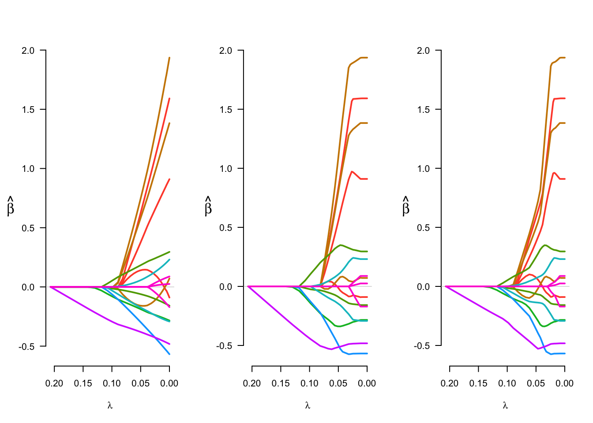

This page contains a combination of traditional lecture materials (slides) and code demonstrating the relevant methods. The short course will proceed by working through both. We will use several recent packages in our examples; see the About page for information about the package versions.
library(tidyverse)
library(grpreg)
library(splines)
library(refund)
library(refund.shiny)In this section we will briefly examine implementations of variable selection methods, with emphasis on group variable selection methods using penalized approaches. The primary package and function is grpreg::grpreg; we’ll start with the example included in the help file for this function.
A brief examination of the example data is below. Particular attention should be paid to variable classes.
data(Birthwt)
names(Birthwt)
## [1] "X" "bwt" "low" "group"
class(Birthwt$X)
## [1] "matrix"
class(Birthwt$group)
## [1] "factor"
head(Birthwt$X) %>% round(3)
## age1 age2 age3 lwt1 lwt2 lwt3 white black smoke ptl1
## [1,] -0.058 0.011 0.030 0.124 -0.021 -0.131 0 1 0 0
## [2,] 0.134 0.055 -0.097 0.060 -0.069 -0.033 0 0 0 0
## [3,] -0.045 -0.009 0.045 -0.059 0.037 0.005 1 0 1 0
## [4,] -0.031 -0.026 0.052 -0.052 0.024 0.019 1 0 1 0
## [5,] -0.072 0.035 0.005 -0.054 0.028 0.015 1 0 1 0
## [6,] -0.031 -0.026 0.052 -0.014 -0.033 0.050 0 0 0 0
## ptl2m ht ui ftv1 ftv2 ftv3m
## [1,] 0 0 1 0 0 0
## [2,] 0 0 0 0 0 1
## [3,] 0 0 0 1 0 0
## [4,] 0 0 1 0 1 0
## [5,] 0 0 1 0 0 0
## [6,] 0 0 0 0 0 0
Birthwt$group
## [1] age age age lwt lwt lwt race race smoke ptl ptl
## [12] ht ui ftv ftv ftv
## Levels: age lwt race smoke ptl ht ui ftvNext we’ll fit a regression for birthweight as a response and the grouped variables as predictors.
X <- Birthwt$X
group <- Birthwt$group
y <- Birthwt$bwt
fit_lasso <- grpreg(X, y, group, penalty="grLasso")
fit_MCP <- grpreg(X, y, group, penalty="grMCP")
fit_SCAD <- grpreg(X, y, group, penalty="grSCAD")
par(mfrow = c(1,3))
plot(fit_lasso)
plot(fit_MCP)
plot(fit_SCAD)
par(mfrow = c(1,1))Examining coefficients at a few choices of the tuning parameter is also informative.
fit_MCP$beta[,c(5,10,70)]
## 0.1423 0.0894 3e-04
## (Intercept) 2.9847260 3.028699341 3.04928708
## age1 0.0000000 0.000000000 -0.09001391
## age2 0.0000000 0.000000000 1.59194313
## age3 0.0000000 0.000000000 0.90987958
## lwt1 0.0000000 0.000000000 1.93659352
## lwt2 0.0000000 0.000000000 0.07143946
## lwt3 0.0000000 0.000000000 1.38307317
## white 0.0000000 0.155192524 0.29586905
## black 0.0000000 -0.030621984 -0.15814094
## smoke 0.0000000 -0.187487961 -0.28375954
## ptl1 0.0000000 -0.028264345 -0.29196459
## ptl2m 0.0000000 0.007203366 0.23117756
## ht 0.0000000 -0.178464664 -0.56812596
## ui -0.2709362 -0.476738463 -0.48195970
## ftv1 0.0000000 0.000000000 0.08821129
## ftv2 0.0000000 0.000000000 0.02498277
## ftv3m 0.0000000 0.000000000 -0.17039698The grpreg package has two approaches for choosing the tuning parameter: selection using an information criterion and cross validation. The code below briefly compares these approaches using a Lasso penalty.
coef_BIC = grpreg::select(fit_lasso, "BIC")$beta
coef_AIC = grpreg::select(fit_lasso, "AIC")$beta
fit_cv = cv.grpreg(X, y, group, penalty = "grLasso", seed = 1)
coef_CV = fit_cv$fit$beta[,fit_cv$min]
cbind(coef_BIC, coef_AIC, coef_CV)
## coef_BIC coef_AIC coef_CV
## (Intercept) 3.02538346 3.03741741 3.03741741
## age1 0.12939932 0.10916651 0.10916651
## age2 0.51412019 1.06086870 1.06086870
## age3 0.30721680 0.63752807 0.63752807
## lwt1 0.62866631 1.24964955 1.24964955
## lwt2 -0.15130777 -0.11980997 -0.11980997
## lwt3 0.49392658 0.94294413 0.94294413
## white 0.16770938 0.23783089 0.23783089
## black -0.05346525 -0.09790261 -0.09790261
## smoke -0.17439310 -0.23338665 -0.23338665
## ptl1 -0.15787913 -0.23510414 -0.23510414
## ptl2m 0.04441185 0.12112364 0.12112364
## ht -0.26668574 -0.41917167 -0.41917167
## ui -0.36973323 -0.42380726 -0.42380726
## ftv1 0.00000000 0.02974538 0.02974538
## ftv2 0.00000000 0.01099763 0.01099763
## ftv3m 0.00000000 -0.03967641 -0.03967641Next we’ll take a few minutes for some independent coding. Using the DTI dataset, create predictors based on averaging across profiles. Grouping these within tracts (or within modalities), use these as predictors of pasat or case.